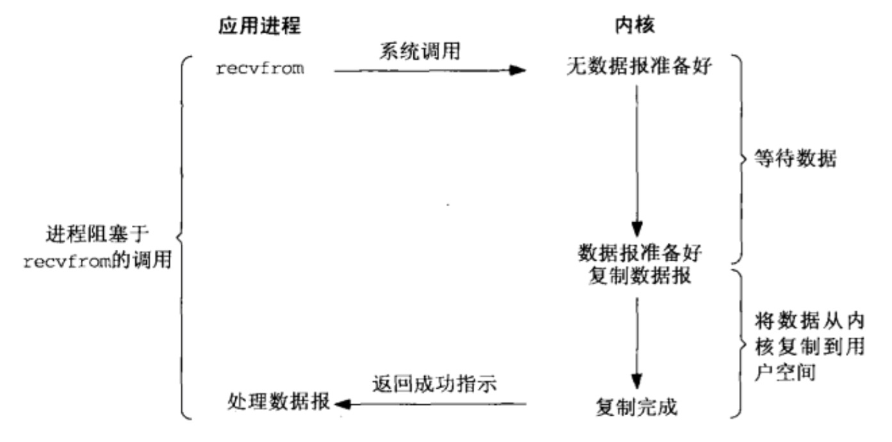
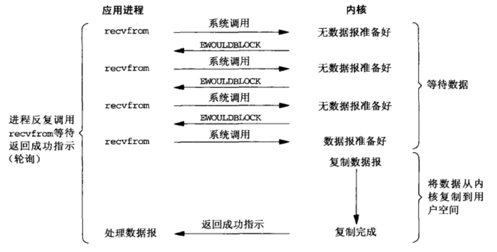
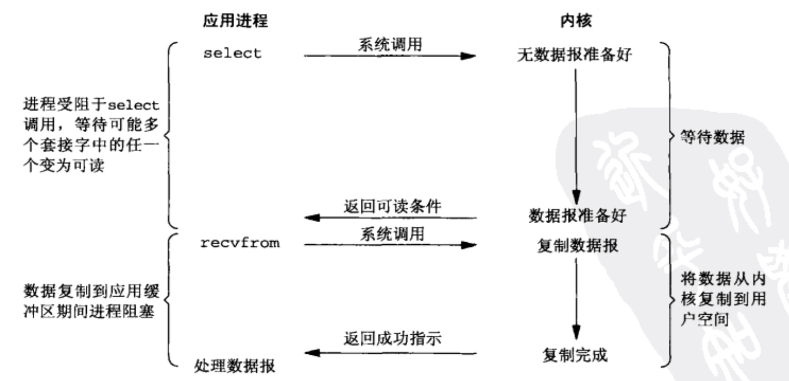
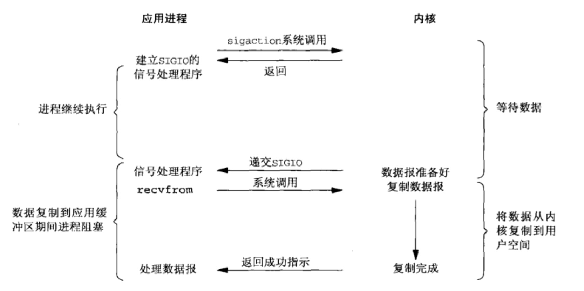
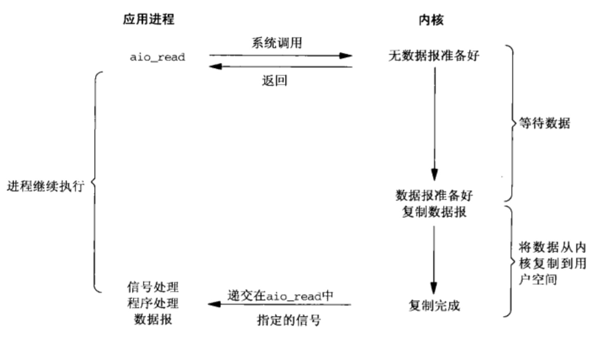
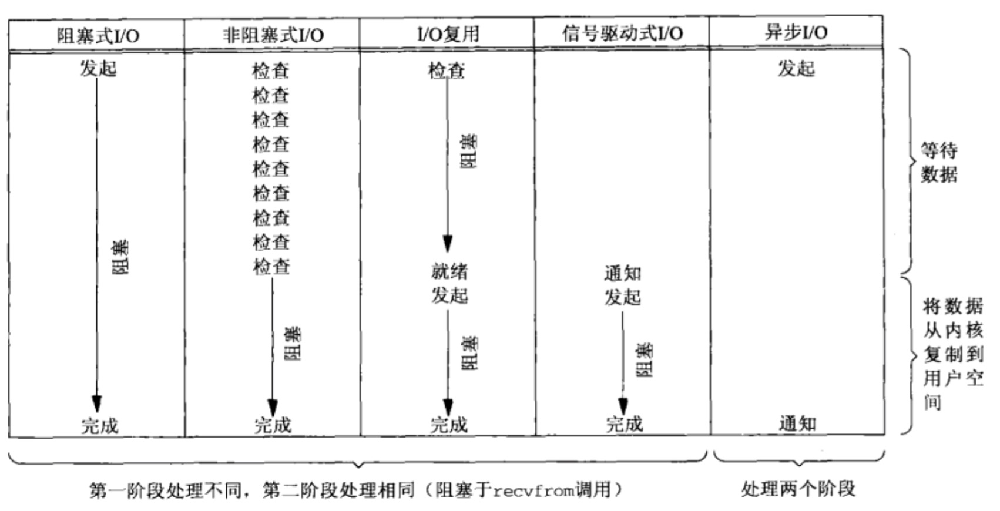

1、Unix下5中IO模型
【1.1】 阻塞式IO(blocking I/O)

【1.2】 非阻塞式IO(nonblocking I/O)

【1.3】 I/O复用(I/O multiplexing select/poll)

【1.4】 信号驱动式IO(signal-driven I/O)

【1.5】 异步IO()

【1.6】 5中I/O模型对比

2、Java NIO
Java NIO基于I/O复用技术的非阻塞I/O,不是异步I/O,1.4和1.5 update10之前的Selector基于select/poll，后使用epoll替换了select/poll 。NIO类库支持非阻塞读和写操作，相比于之前的同步阻塞读和写，是异步的。JDK1.7提供NIO2.0新增异步I/O。
3、epoll相对于select/poll的优势
【3.1】 select最大的缺陷就是单个进程所打开的socket描述符(FD)是有一定限制的，FD_SETSIZE默认是1024。epoll没有限制。
【3.2】 传统select/poll的另一个致命弱点，就是每次调用都会线性扫描所有socket集合，及时只有很少部分活跃。epoll只扫描活跃socket。
【3.3】 无论是select、poll还是epoll都需要内核把FD消息通知给用户空间，如何避免内存复制就显得非常重要，epoll是通过内核和用户空间mmap同一块内存来实现。
【3.4】 epoll的api更简单。